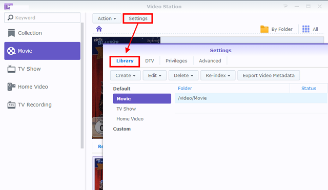

Übersicht
Mit Video Station können Sie Ihre Videosammlungen ganz einfach in verschiedene Standard oder benutzerdefinierte Bibliotheken organisieren und kategorisieren, so dass Sie ein Video weitaus effizienter finden können. Zusätzlich ist die Wiedergabe und Freigabe so einfach und selbsterklärend wie einige wenige Mausklicks.
1. Video Station installieren
Um Video Station zu installieren, wechseln Sie bitte zu Paketzentrum, suchen Sie nach Video Station und klicken Sie anschließend auf Installieren.

2. Videos in Standardbibliotheken speichern und kategorisieren
Video Station bietet drei Standardbibliotheken wie auf der linken Seite gezeigt: Film, TV-Serie und Privatvideo. Um sicherzustellen, dass Ihre Videos richtig indiziert und kategorisiert werden können, müssen Sie Video-Ordner für jede Bibliothek angeben und Ihre Dateien anschließend in den entsprechenden Video-Ordnern speichern. Standardmäßig wurden im gemeinsamen Order video drei Ordner für die drei Standardbibliotheken erstellt: Film, TV-Serie und Privatvideo. Zusätzlich zu diesen drei Ordnern können Sie auch Folgendes tun, um weitere Video-Ordner für die Bibliotheken hinzuzufügen.
Das System wird automatisch nach entsprechenden Metadaten und anderen Informationen (z.B. Poster) für zwei Videotypen (Film und TV-Serie) aus dem Internet suchen. Um sicherzustellen, dass Ihre Videos mit den korrekten Informationen versehen werden können, empfehlen wir dringend, dass die Videos zu den entsprechenden Videotypen der jeweiligen Bibliotheken passen.
Video-Ordner für Standardbibliotheken hinzufügen
- Gehen Sie zu Einstellungen > Bibliothek. 
- Klicken Sie auf Erstellen > Ordner hinzufügen, um einen Ordner auf Ihrem Synology NAS auszuwählen und die entsprechende Bibliothek zuzuweisen. Sie können bis zu 100 Video-Ordner für eine Bibliothek hinzufügen. Nach der Auswahl eines Ordners kann weder der Ordner noch seine Unterordner für eine andere Bibliothek ausgewählt werden.
- Speichern Sie Videodateien in Video-Ordner, um Video in die entsprechenden Bibliotheken einzuordnen.
- Sie können jetzt Ihre gewünschten Videos in den Bibliotheken durchsuchen und ansehen!

3. Videos in benutzerdefinierten Bibliotheken speichern und kategorisieren
Zusätzlich zu den drei Standardbibliotheken, auf die jeder standardmäßig zugreifen kann, können Sie als DSM admin oder Benutzer der Gruppe administrators auch benutzerdefinierte Bibliotheken erstellen und Zugriffsrechte zuweisen.
3.1 Benutzereigene Bibliotheken erstellen
- Wechseln Sie zu Einstellungen > Bibliothek und klicken Sie auf Erstellen > Bibliothek erstellen.
- Geben Sie einen Namen für die neue Bibliothek an, wählen Sie, welchen Typ von Videos Sie im Ordner ablegen möchten und wählen Sie anschließend Öffentlich, wenn jeder auf die Bibliothek zugreifen soll oder Privat, um den Zugang auf Benutzer mit Berechtigungen einzuschränken. Bitte beachten Sie, dass die in diesem Ordner abgelegten Videos dem hier ausgewählten Typ entsprechen müssen, um die Genauigkeit der aus dem Internet gesammelten Informationen zu gewährleisten.
- Wenn Sie Privat auswählen, klicken Sie auf Berechtigungen zuweisen und markieren Sie die Kästchen, um den Benutzern den Zugriff zu gewähren.

3.2 Video-Ordner für benutzerdefinierte Bibliotheken hinzufügen
- Gehen Sie zu Einstellungen > Bibliothek.
- Klicken Sie auf Erstellen > Ordner hinzufügen, um einen Ordner auf Ihrem Synology NAS auszuwählen und die entsprechende Bibliothek zuzuweisen. Sie können bis zu 100 Video-Ordner zu einer Bibliothek hinzufügen. Nach der Auswahl eines Ordners kann weder der Ordner noch seine Unterordner für eine andere Bibliothek ausgewählt werden.
- Speichern Sie Videodateien in Video-Ordner, um Video in die entsprechenden Bibliotheken einzuordnen.
- Sie können jetzt Ihre gewünschten Videos in den Bibliotheken durchsuchen und ansehen!
4. Videos wiedergeben
Nach der Kategorisierung Ihrer Videodateien in unterschiedliche Bibliotheken können Sie den nachstehenden Schritten folgen, um Ihre Video in Video Station wiederzugeben. Es wird dringend empfohlen, dass Sie den VLC Media Player (Windows, Linux) auf Ihrem Computer installieren. Zusätzlich zur Wiedergabe von Videos auf Ihrem lokalen Computer können Sie auch Videos an DLNA/UPnP-kompatible DMAs oder AirPlay-kompatible Geräte für die Videowiedergabe streamen.
Videos mit eingebettetem Video Player wiedergeben
- Wählen Sie einen Videoclip aus, den Sie wiedergeben möchten, und klicken Sie anschließend auf das Wiedergabesymbol auf dem Videobild oder klicken Sie auf Aktion > Wiedergabe.
- Das Video sollte sofort wiedergegeben werden. Falls nicht, stellen Sie bitte sicher, dass das Format Ihres Videos von Ihrem Webbrowser unterstützt wird, oder dass Sie das VLC Plugin auf Ihrem Computer installiert ist.
- Verwenden Sie die Bildschirmtasten und die Navigationsleiste an der Unterseite des Video Players. Sie können auch die Lautstärke einstellen, die Qualität der Videowiedergabe und die Tonspur auswählen, Untertitel aktivieren oder das Video auf ein anderes Gerät streamen (falls verfügbar).


Detaillierte Informationen über das VLC Plugin und unterstützte Geräte finden Sie in der DSM Hilfe > Video Station > Videowiedergabe.
5. Videos mit der Öffentlichkeit teilen
Mit der Funktion für das öffentliche Teilen können Sie Ihre Videos mit der Video Station ganz einfach mit anderen Personen teilen. Sämtliche geteilte Videos sind über den Link für jeden öffentlich zugänglich und können über die Seite Sammlung verwaltet werden.
Videos mit anderen teilen
- Wechseln Sie zu einer Videobibliothek und klicken Sie oben rechts auf Alle, um sämtliche Videos in dieser Bibliothek anzuzeigen.
- Klicken Sie auf das Auswahlmodus Symbol oder halten Sie Strg oder die Umsch, um mehrere Videos auszuwählen. Klicken Sie anschließend auf Aktion > Mit der Öffentlichkeit teilen.
- Wenn Sie nur ein Video zum Teilen ausgewählt haben, wird das Video zu einer gemeinsamen Sammlung mit dem Namen Geteilte Videos hinzugefügt. Dort können Sie sämtliche Videos verwalten, die Sie geteilt haben.
- Wenn Sie mehrere Videos teilen, werden die Videos in einer neuen geteilten Sammlung angeordnet.
- Alternativ können Sie auch auf Aktion > Sammlung klicken, um die ausgewählten Videos zu einer bestehenden geteilten Sammlung (falls vorhanden) hinzuzufügen.
- Geben Sie ggf. eine Gültigkeitsdauer ein.
- Sie können den Link einfach in E-Mails, Sofortnachrichten und Webseiten kopieren und einfügen, um die Videos mit jedem zu teilen.

6. Videos auf Mobilgeräten organisieren und ansehen
Um die Video Station über Mobilgeräte zu erreichen, können Sie DS video mit iOS/Android Geräten oder Windows Phone über den unten stehenden QR Code herunterladen, um Videos auf Ihrem Mobilgerät wiederzugeben und Ihre Sammlungen zu organisieren, oder Videos an Ihre DMAs oder AirPlay Geräte sowohl zu Hause als auch unterwegs zu streamen.